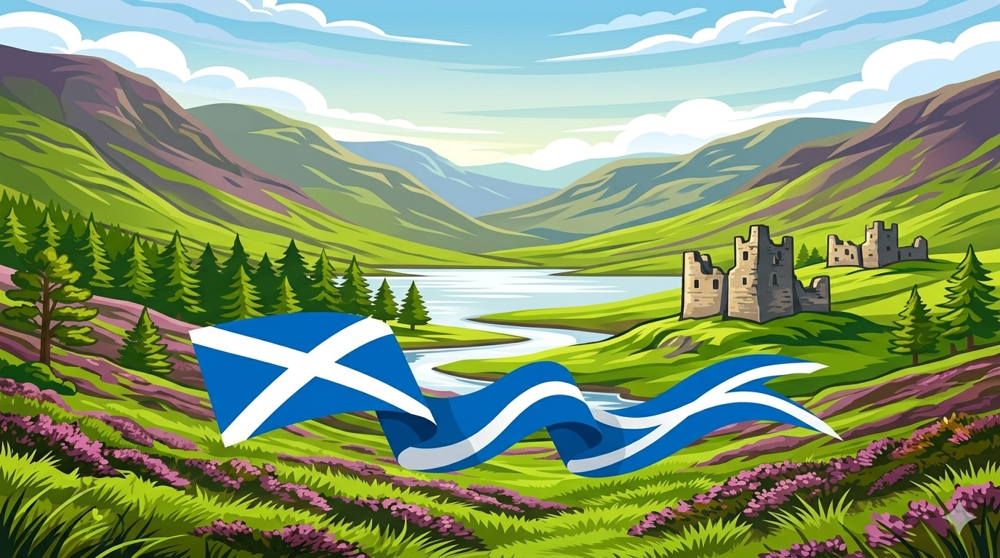

Scotland
The earliest known evidence of human presence in Scotland is Hamburgian culture stone tools produced by late Upper Paleolithic hunter gatherers who arrived in Scotland during the Bølling–Allerød Interstadial warm period at the end of the last ice age, around 14,500 to 14,000 years ago, shortly following the retreat of the ice sheet that had previously covered Scotland. Neolithic farmers arrived in Scotland around 6000 years ago. The well-preserved village of Skara Brae on the mainland of Orkney dates from this period. Neolithic habitation, burial, and ritual sites are particularly common and well preserved in the Northern Isles and Western Isles, where a lack of trees led to most structures being built of local stone. Evidence of sophisticated pre-Christian belief systems is demonstrated by sites such as the Callanish Stones on Lewis, and the Maes Howe on Orkney, which were built in the third millennium BC.
The first written reference to Scotland was in 320 BC by Greek sailor Pytheas, who called the northern tip of Britain "Orcas", the source of the name of the Orkney islands.

Clans
The crest badges used by members of Scottish clans are based upon armorial bearings recorded by the Lord Lyon King of Arms in the Public Register of All Arms and Bearings in Scotland. The blazon of the heraldic crest is given, and the heraldic motto with its translation into English. While all the crest badges of the clan names listed are recognised by the Lord Lyon King of Arms, only about one half of these (about 140) have a clan chief who is acknowledged by the Lord Lyon King of Arms as the rightful claimant of the undifferenced arms upon which the crest badges are based.
Cows
The Highland is a traditional breed of western Scotland. There were two distinct types. The Kyloe, reared mainly in the Hebrides or Western Islands, was small and was frequently black. The cattle were so called because of the practice of swimming them across the narrow straits or kyles separating the islands from the mainland. The cattle of the mainland were somewhat larger and very variable in colour; they were often brown or red. These cattle were important to the Scottish economy of the eighteenth century. At markets such as those of Falkirk or Crieff, many were bought by drovers from England, who moved them south over the Pennines to be fattened for slaughter. In 1723, over 30000 Scottish cattle were sold into England.